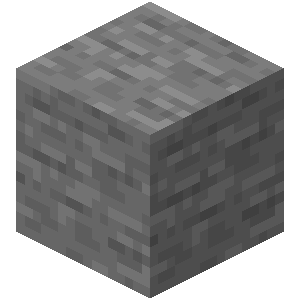

Ruby Monstas
Enumerables
Intro
Enumerables are certain methods that process a list,
particularly Arrays [].
These methods are special as they take a block as an argument.
Excursion on Blocks
For the moment it is not imperative to know what blocks really are.

We're going to focus how they look like, because they follow a specific "syntax pattern".
Simple Block
3.times do
puts "Olé"
end
Here we have a method called .times which takes a block as an argument.
A block always starts with the keyword do and requires (!) an end.
The area between do and end we call the block body.
And that's basically how a block looks like! 💡
Olé Olé Olé
Block with arguments
Depending on the method we define a block argument between two verticle bars |variable|:
3.times do |x|
puts "The counter is currently at #{x}"
endThe counter is currently at 0 The counter is currently at 1 The counter is currently at 2
That argument is available in the block body and automatically contains a value (we'll learn about it later). 💅
Same same
Ruby has a second way to write blocks.
3.times { |x| puts "The counter is currently at #{x}" }
# is the same as
3.times do |x|
puts "The counter is currently at #{x}"
endWe suggest to use the do-end style as you're just beginning your Ruby journey.
Back to enumerables
Ruby provides nifty enumerable methods
that can be used on any kind of lists.
In the following slides we're going to take a look at these:
.each.map.findor.detect.find_allor.select
For a complete list see Ruby's Documentation.
.each
cities = ["Rome", "Oslo", "Vienna"]
cities.each do |city|
puts "I wanna visit #{city}!"
endI wanna visit Rome! I wanna visit Oslo! I wanna visit Vienna!
| Block body | Return value |
|---|---|
| May contain anything | The input Array |
We do not use the return value since the it is the input Array itself.
.map
foods = ["Cherry", "Kiwi", "Orange"]
uppercased_foods = foods.map do |fruit|
fruit.upcase
end> uppercased_foods => ["CHERRY", "KIWI", "ORANGE"]
| Block body | Return value |
|---|---|
| Instructions how to modify the elements | A new Array containing the modified elements |
.find / .detect
movies = ["Superman", "Wonder Woman", "Pretty Woman"]
movie = movies.find do |title|
title.include?("Woman")
end> movie => "Wonder Woman"
| Block body | Return value |
|---|---|
| A boolean expression |
The first element where the boolean expression is true
|
.find_all / .select
artists = ["Beatles", "Madonna", "Bob Marley"]
b_artists = artists.find_all do |artist|
artist.start_with?("B")
end> b_artists => ["Beatles", "Bob Marley"]
| Block body | Return value |
|---|---|
| A boolean expression |
All elements where the boolean expression is true
|
Summary
Enumerables are methods that...
- process a list
- take a block as an argument
A block starts with do and ends with end.
Depending on the method...
- there is a block argument:
|variable| - the block body does different things
- thus the return value differs too
...the documentation tells us how to use an enumerable.
Additional Resources
What questions do you have?